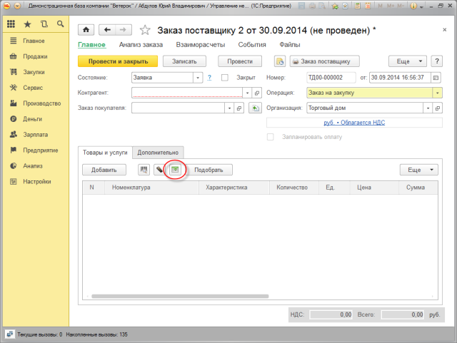
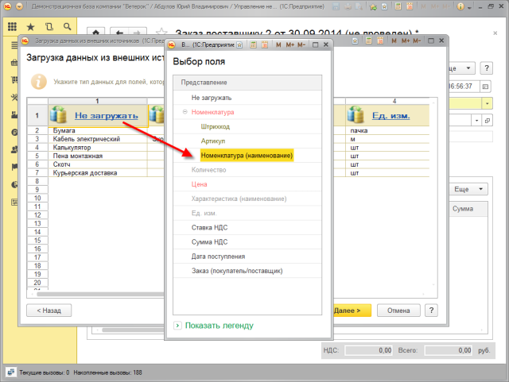
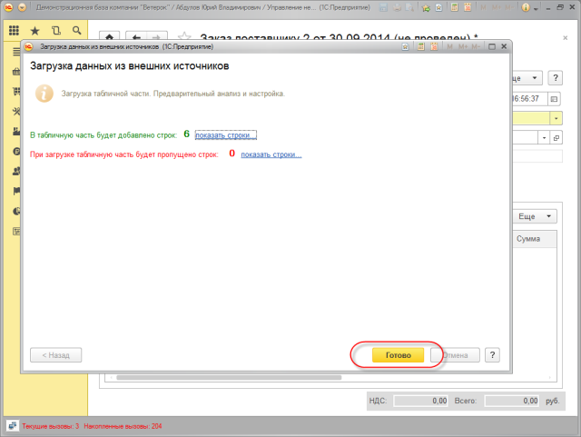
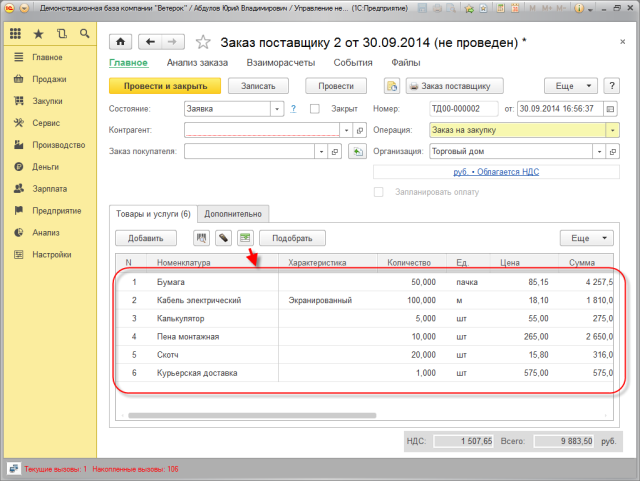
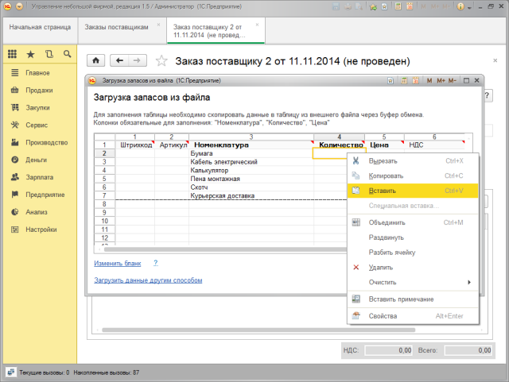

IMPORT DATA FROM EXTERNAL SOURCE
What data can be imported and where?
Import from xlsx, mxl, csv formats is supported . You can export to:
ATTENTION! Data importing to catalogs and data register is irreversible! So, in case invalid data (irrelevant data) is imported, the user will have to clear the catalog or data register manually.
How to import data?
Procedure beginning commands are available for the users directly from objects. For example, to import data to the tabular section, it is enough to open the corresponding document, and to import catalog items it is necessary to go to the list form. Prices are loaded directly from the Price list data processors.
Quick links
ATTENTION! Data importing is available only for the users with administrator rights.
Example of data importing to the tabular section of the Purchase order document.
1. To import data from external source, it is necessary to open the document and select the appropriate command

2. Specify the file

3. It is necessary to specify which columns the data from the file correspond to.
4. Validate comparing results, correct data if necessary

5. Import data to the tabular section of the document

Importing data by copying
Data loading by copying is available in basic application objects. When using this method the user can move data to 1C application by copying/inserting the content of document columns.

ATTENTION! This method is not available for the web client and supports loading of basic objects only. For example, entering stock balance by copying is not available.
Previous version of data import processor
The "Importing data from electronic tables" previous data processor is no longer supported, but is available in the application to support compatibility and mitigate transition.
ATTENTION! In the future it is planned to delete previous data processor from the application.